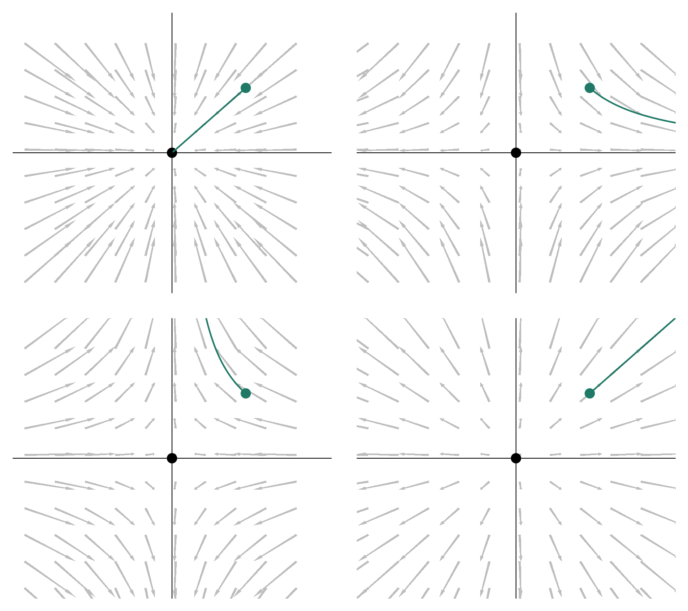
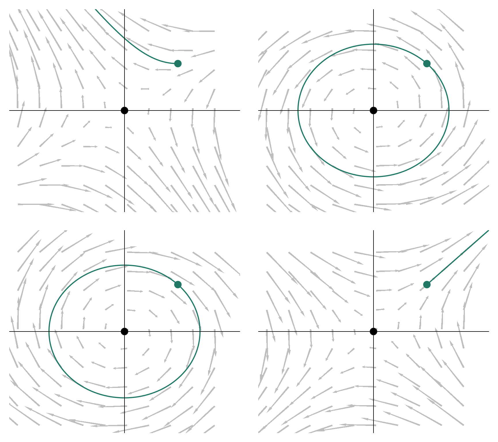
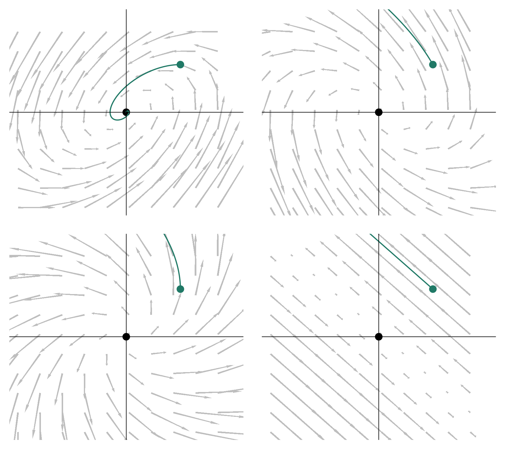
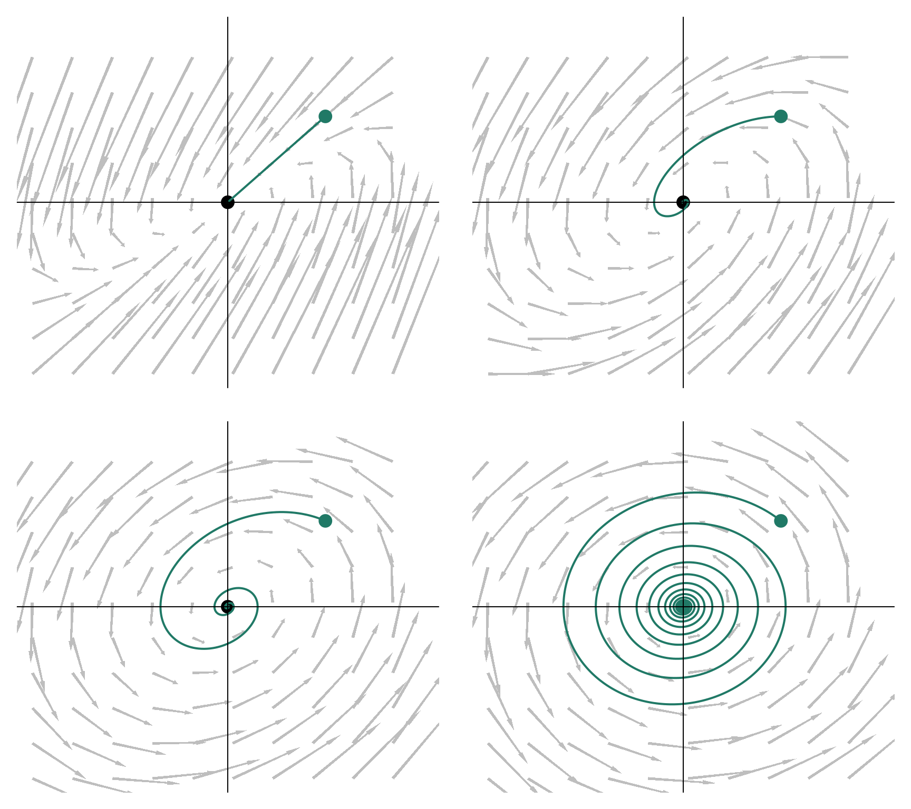
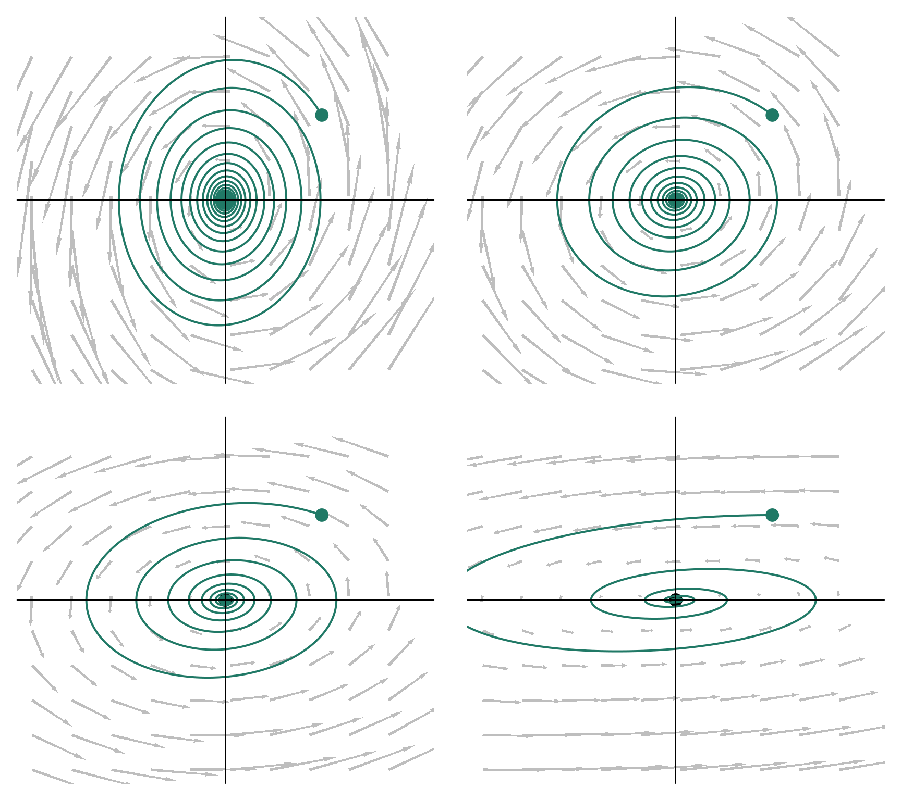
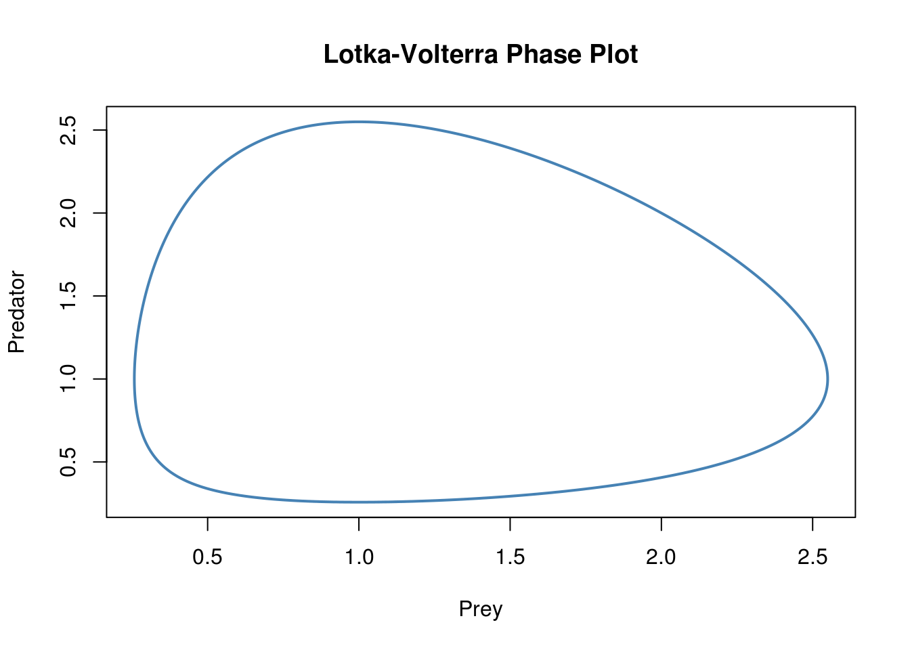

Chapter 5 ODE in multi-dimensions
5.1 Terminology
\[\dot{X} = f(X, t, \Theta)\]
where:
Xis a vector of state variables (e.g. population size of several species)tstands for timeΘincludes all the parametersfis a multi-dimensional function
5.2 Linear system
Function f and its parameters \theta.
5.2.1 General case
\[ \left\{ \begin{array}{l} \dot{x}_1 = \sum_i a_{1,i}x_i\\ ... \\ \dot{x}_n = \sum_i a_{n,i}x_{i} \\ X(0) = X_0 \end{array} \right. \]
Using matrices:
\[\dot{X} = AX\]
Linear system in \(n\) dimensions.
5.2.2 Trivial case
If \(i \neq j \Rightarrow 0\) then A in diagonal:
\[ \left\{ \begin{array}{l} \dot{x}_1 = a_{1,1}x_1\\ ... \\ \dot{x}_n = a_{1,1}x_{n} \\ X(0) = X_0 \end{array} \right. \]
Then, all state variables are independent and the answer is obtained by solving \(n\) times a one-dimensional problem (described in the previous chapter).
5.2.3 Diagonalizations
Now let’s go back to the general case and assume that A is a diagonalizable matrix (see Diagonalization on wikipedia), i.e. that it exits: \(P\) and \(D\) such as:
\[A = PDP^{-1}\]
This operation is a change of basis, we actually assume that it exists a basis in which our problem is as simple as the trivial case, \(P\) is the matrix that does the conversion. If our
5.2.4 Graphical examples
beta <- list(
matrix(c(-1, 0, 0, -1), 2),
matrix(c(1, 0, 0, -1), 2),
matrix(c(-1, 0, 0, 1), 2),
matrix(c(1, 0, 0, 1), 2)
)
par(mfrow = c(2,2))
for (i in 1:4) intLinear(beta = beta[[i]])
beta <- list(
matrix(c(0, -1, -1, 1), 2),
matrix(c(0, 1, -1, 0), 2),
matrix(c(0, -1, 1, 0), 2),
matrix(c(0, 1, 1, 0), 2)
)
par(mfrow = c(2,2))
for (i in 1:4) intLinear(beta = beta[[i]])
beta <- list(
matrix(c(0, 1, -1, -1), 2),
matrix(c(0, 1, -1, 1), 2),
matrix(c(1, 1, -1, 1), 2),
matrix(c(-1, 1, -1, 1), 2)
)
par(mfrow = c(2,2))
for (i in 1:4) intLinear(beta = beta[[i]])
beta <- list(
matrix(c(0, 1, -1, -2), 2),
matrix(c(0, 1, -1, -1), 2),
matrix(c(0, 1, -1, -.5), 2),
matrix(c(0, 1, -1, -.1), 2)
)
par(mfrow = c(2,2))
for (i in 1:4) intLinear(beta = beta[[i]], mxt =100)
beta <- list(
matrix(c(0, 2, -1, -.1), 2),
matrix(c(0, 1, -1, -.1), 2),
matrix(c(0, .5, -1, -.1), 2),
matrix(c(0, .1, -1, -.1), 2)
)
par(mfrow = c(2,2))
for (i in 1:4) intLinear(beta = beta[[i]], mxt =100)
5.3 Non-Linear systems
5.3.1 Finding the eigen values
\[AX = \lambda X\]
Solutions of:
\[\left(A - \lambda I_n\right) X = 0_n\]
5.4 Examples
Symetry drives weird shit! (K. S. McCann)
5.4.1 Lotka Volterra
5.4.1.1 Intro
Classical model see Volterra (1927).
Equations:
\[ \left\{ \begin{array}{l} \dot{R} = rR - aCR \\ \dot{C} = eaCR - mC \end{array} \right. \]
5.4.1.2 First find equilibria and isolclines
\[ \left\{ \begin{array}{l} \dot{R} = 0 \Leftrightarrow C = r/a; C*=r/a \\ \dot{C} = 0 \Leftrightarrow R = m/(ea); R* = m/(ea) \end{array} \right. \]
5.4.1.3 Jacobian matrix
\[\begin{pmatrix} r-aC* & -aR* \\ eaC* & eaR*-m \end{pmatrix}\]at the non-trivial equilibrium:
\[\begin{pmatrix} 0 & -aR* \\ eaC* & 0 \end{pmatrix}\]5.4.1.4 Diagonalisation
\[\begin{pmatrix} -\lambda & -aR* \\ eaC* & -\lambda \end{pmatrix}\]To get the two eigen values we must solve:
\[\lambda^2 + mr = 0\]
\[eig = \pm i \sqrt{mr}\]
(pure imaginary, so => spins)
5.4.1.5 Lotka-Volterra withodeintr
odeint is a C++ library, Timothy H. Keitt (may ring the bell to some of you) has created a R package that wrapps around this library: odeintr.
Example from the GitHub project page:
library(odeintr)
dxdt = function(x, t) c(x[1] - x[1] * x[2], x[1] * x[2] - x[2])
obs = function(x, t) c(Prey = x[1], Predator = x[2], Ratio = x[1] / x[2])
system.time({x = integrate_sys(dxdt, rep(2, 2), 20, 0.01, observer = obs)})
#> user system elapsed
#> 1.484 0.008 1.489
plot(x[, c(2, 3)], type = "l", lwd = 2, col = "steelblue", main = "Lotka-Volterra Phase Plot")
References
Volterra, Vito. 1927. “Fluctuations in the Abundance of a Species Considered Mathematically.” Nature 119 (2983): 12–13. doi:10.1038/119012b0.
Rosenzweig, M. L., and R. H. MacArthur. 1963. “Graphical Representation and Stability Conditions of Predator-Prey Interactions.” The American Naturalist 97 (895): 209–23.
Rosenzweig, M. L. 1971. “Paradox of Enrichment: Destabilization of Exploitation Ecosystems in Ecological Time.” Science 171 (3969): 385–87. doi:10.1126/science.171.3969.385.